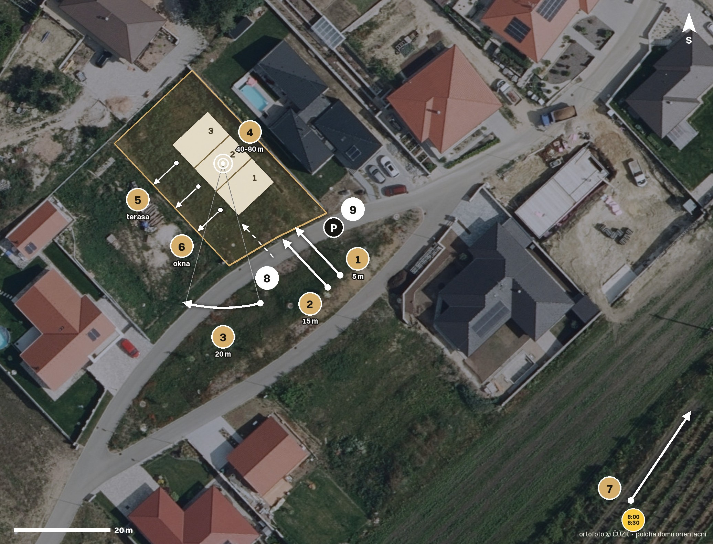
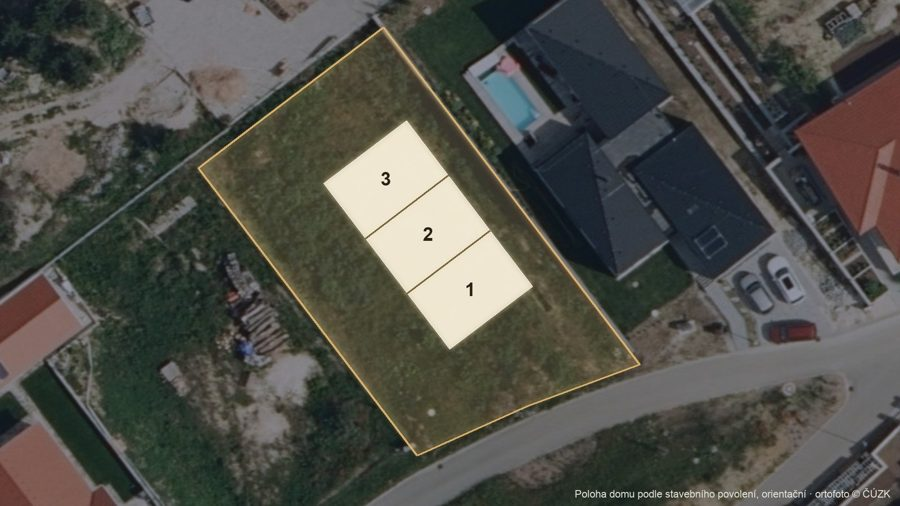
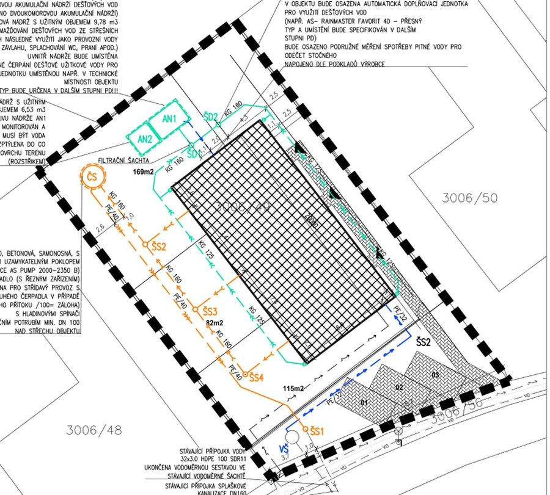
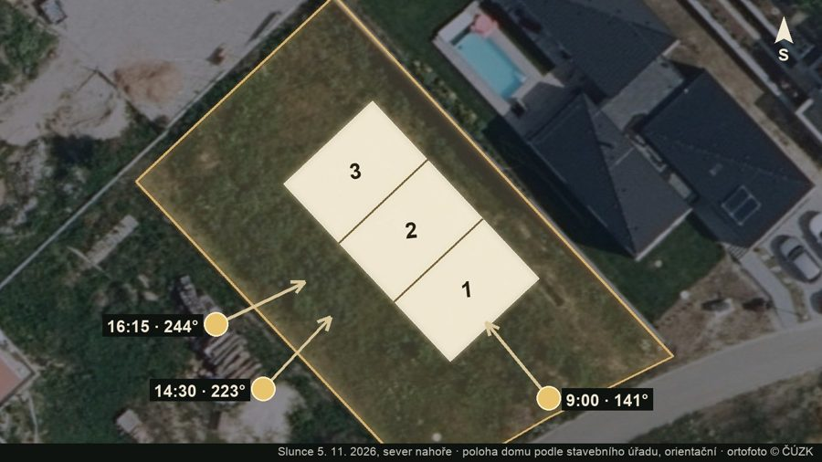
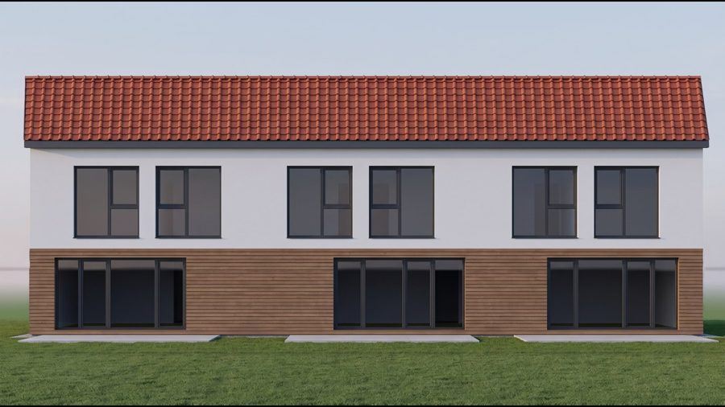

Točíme jen ráno. Předpověď na 8:00: skoro jasno (oblačnost 7 %, vítr 9 km/h), od 9:00 mraky (64 %). Slunce v 8:00 na 128° a 10° nad obzorem, v 8:30 na 134° a 14°, v ose domu 8:45. Proto nejdřív všechno na pozemku (1–9), Valtice (10–12) jen když zbude čas. Dům ještě nestojí, dron létá tak, aby šel dobře osadit.
Prázdný pozemek parc. č. 3006/49, z ulice hned vlevo od domu Na Vinici 1241 (šedá střecha, bazén). Zastavit na silnici u bodu P.
Bod P · 48.739088, 16.767051
Klient na místě nebude a k natáčení od něj nic nepotřebujeme (platba až po předání). Když nejde vstoupit na pozemek, točit z ulice a ze vzduchu.

Pořadí ve filmu. Natáčí se jinak, podle světla (záložka Plán dne). U každé kapitoly odkaz na řádky shotlistu.

Ranní let od ulice nad trávou v ose budoucího domu, slunce za kamerou.
Natočit: → řádky 1, 2, 7
Stejný let pokračuje přes pozemek a v záběru už stojí dům, zahradní stranou ke kameře (vychytávka 1). Štítek „Vizualizace“.
Natočit: → řádky 1, 2

Kolmo shora: zlaté hranice zahrad 1, 2 a 3 naběhnou jedna po druhé s výměrou, nakonec obrys pozemku 834 m² (vychytávka 2).
Natočit: → řádky 4

Šikmo od jihu v ranním světle: z ulice přízemní, do zahrady dvě podlaží a terasa z obýváku. Pak pohled od ulice ke vstupům.
Natočit: → řádky 3, 8, 9
Šest videovizualizací jednotky 1 z její 3D prohlídky (VIZ 1–6). V oknech skutečný výhled natočený dronem z výšky teras a pokojů (vychytávka 3). Na place se točí jen výhledy.
Natočit: → řádky 5, 6

Zpátky nad domem, v obraze tabulka tří jednotek s plochou a zahradou a odkaz na 3D prohlídky.
Natočit: → řádky 4
Zámek, náměstí Svobody a Kolonáda na Rajstně z dronu, vinice v podzimních barvách.
Natočit: → řádky 7, 10, 11, 12
Osazený dům z oblouku v nízkém ranním světle, jméno, telefon a logo. Ceny jen pokud je klient chce.
Natočit: → řádky 3